Media
Press coverage and media appearances
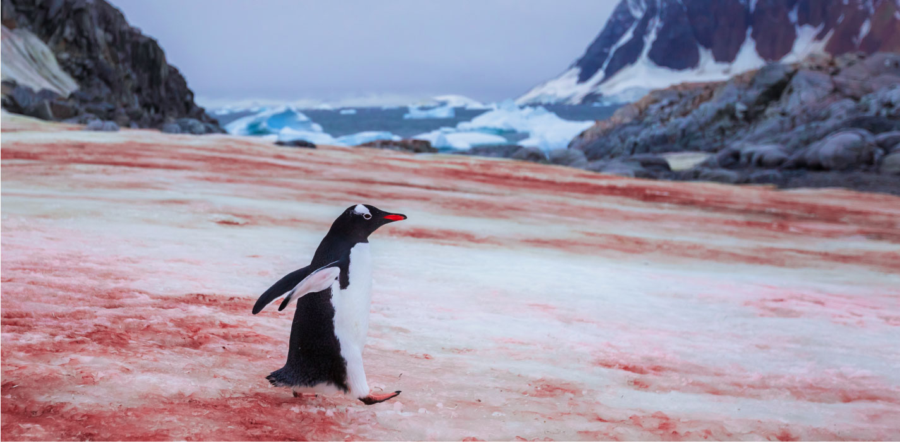
20 March 2026
Canal Sur Radio - Interview on the program Cambio Climático
Interview on the program Climate Change on Canal Sur Radio, stating that red snow algae are more widespread than previously known in the planet's frozen regions (from minute 34:50).
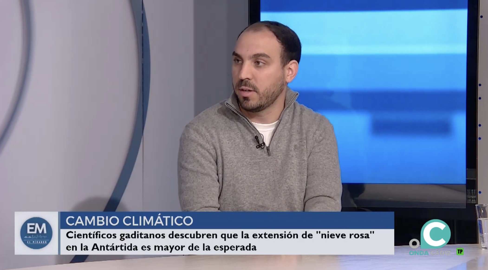
11 March 2026
Onda Cádiz - Interview on the program El Mirador
Dr. Alejandro Román was interviewed about his publication on red snow algal blooms in Antarctica and their relationship with climate change.
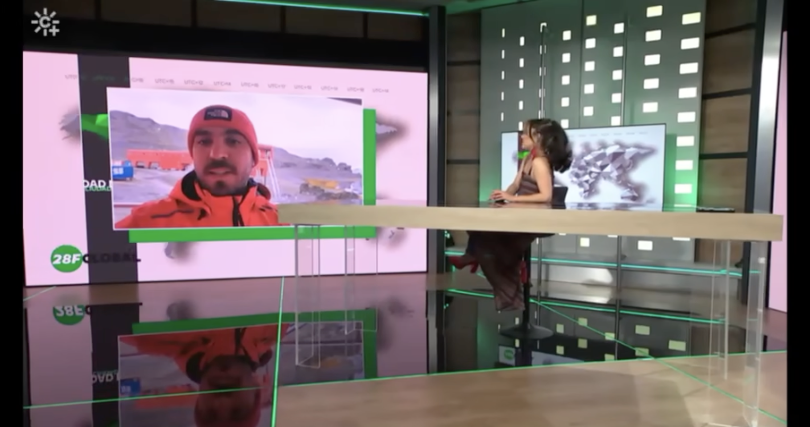
28 February 2026
Canal Sur TV - 28F Global
Interview featured in the Canal Sur TV special 28F Global, in which Dr. Alejandro Román discusses daily life and research projects carried out during the 2026 Spanish Antarctic Campaign.
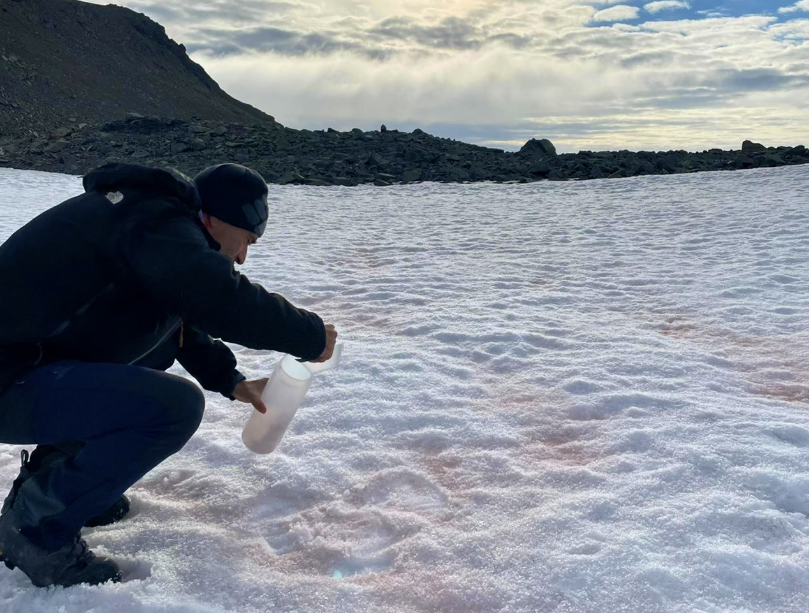
22 January 2026
Press Release - The Extent of Algae Turning Antarctic Snow Pink Is Greater Than Expected
The algae responsible for the "pink snow" phenomenon, which covers large areas in Antarctic regions, are proliferating due to climate change and, in turn, accelerating it by enhancing ice melt.
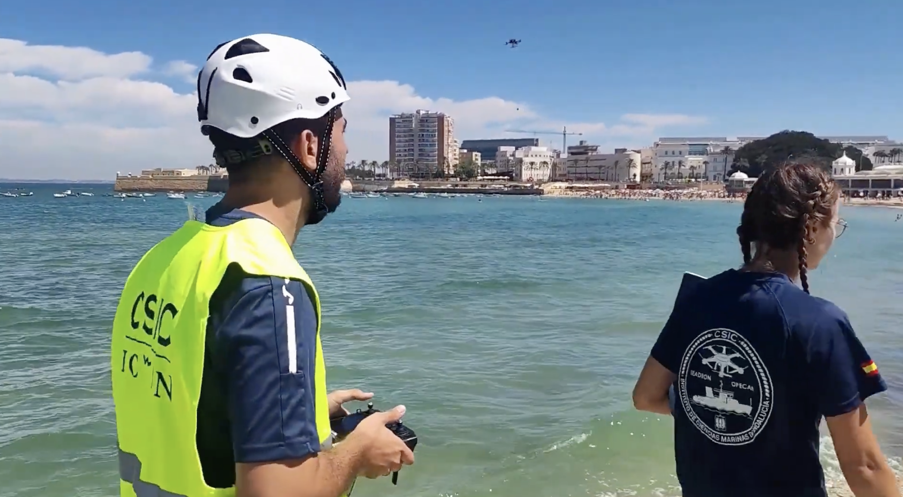
28 October 2025
YouTube - Science to Reduce the Environmental Impact of Sunscreens on Our Coasts
Interview by Ana Lozano del Campo about the Turisdron project, in which drone-mounted sensors were used to analyze the impact of UV filters on water quality and marine ecosystems.
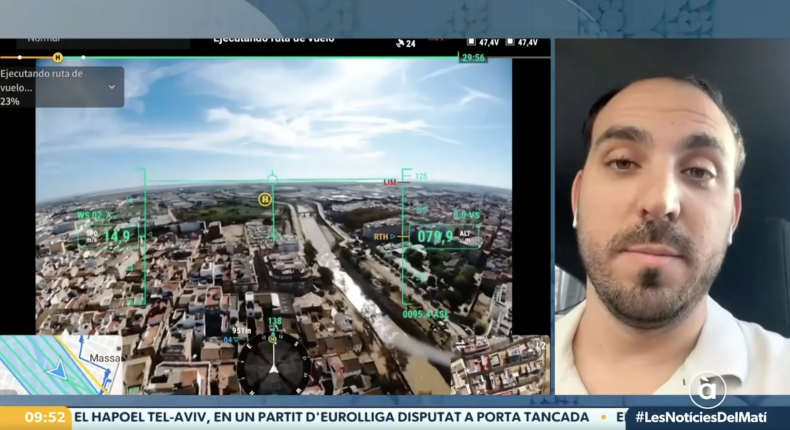
16 October 2025
À Punt Radiotelevisió Valenciana - News Interview
Dr. Alejandro Román explains how drone technology made it possible to assess the environmental impact of the 2024 cut-off low (DANA) event in Valencia.
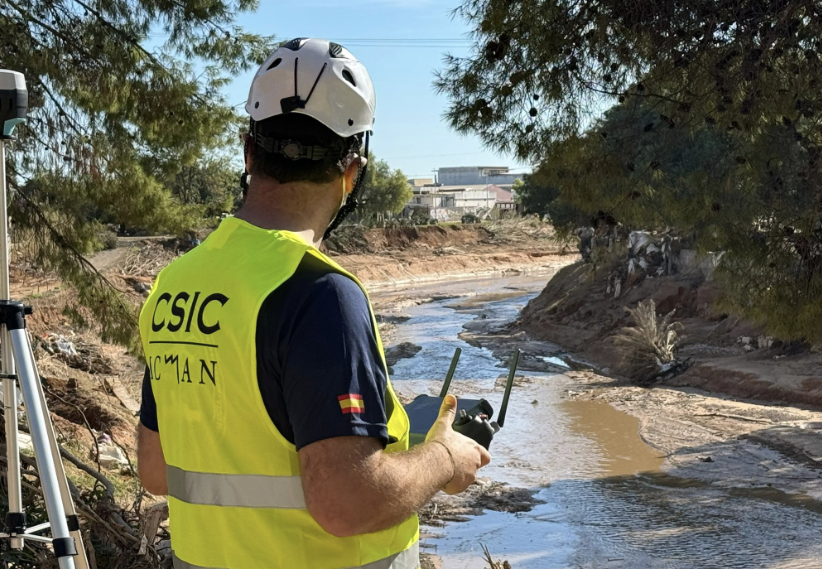
15 October 2025
Press Release - CSIC Study Highlights the Role of Drones in Assessing Infrastructure and Pollutants During the 2024 DANA Event
In the days following the floods in Valencia, CSIC scientific and technical staff conducted around twenty flights using unmanned aerial vehicles to evaluate environmental impacts and infrastructure damage.
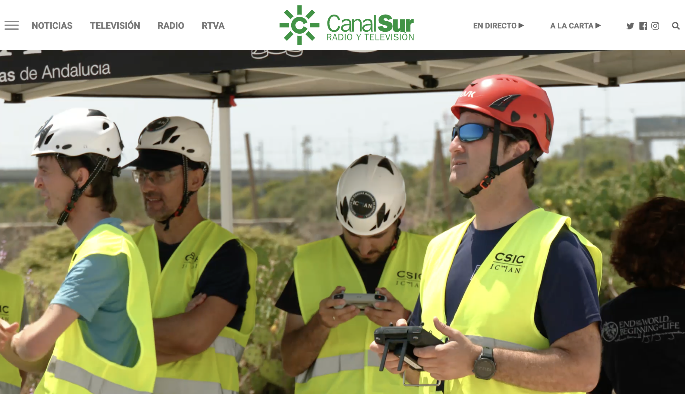
14 September 2025
Canal Sur TV - Espacio Protegido: Recovery of Disused Salt Marshes, Key to Reducing Greenhouse Gases
Report on a study led by Silvia Amaya in the Bay of Cádiz. Dr. Alejandro Román contributed by using drones to carry out high-resolution monitoring of the extent of different salt marshes in the area.
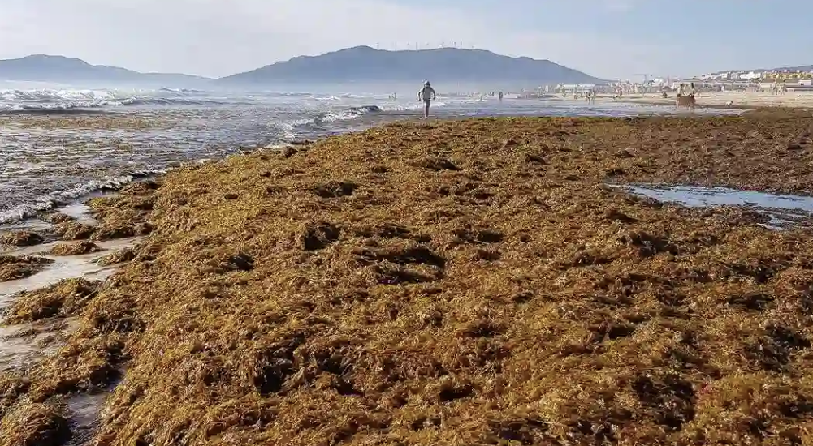
26 August 2025
El Confidencial - The Asian Alga Devastating Cádiz Reaches Cantabria
Press interview in which Drs. Gabriel Navarro and Alejandro Román share their insights on this environmentally significant phenomenon affecting the province of Cádiz.
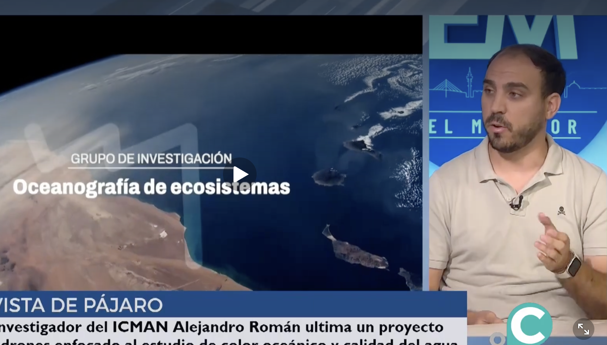
14 August 2025
Onda Cádiz - Program El Mirador
Interview with Dr. Alejandro Román discussing the development of his research projects, also in the context of the 70th anniversary of ICMAN-CSIC.
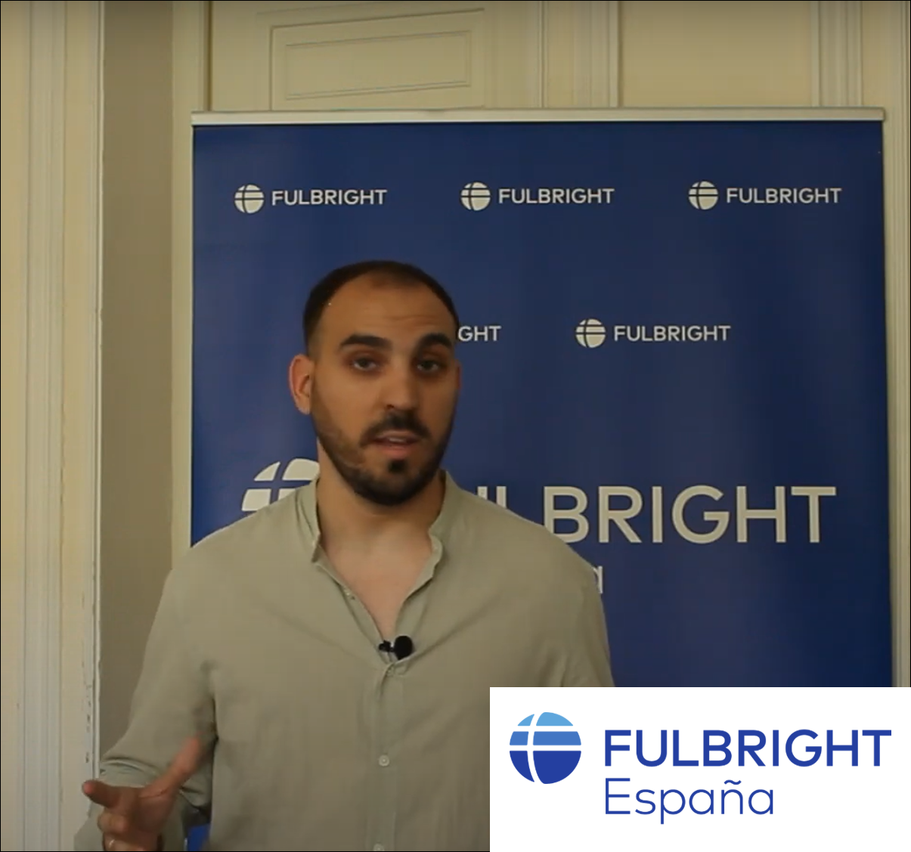
24 September 2024
Fulbright Spain - Interview with 2024 Predoctoral Fulbright Fellows
Alejandro Román takes part in an interview for Fulbright Spain, sharing his full experience in the United States, including how it has shaped his personal and professional life.
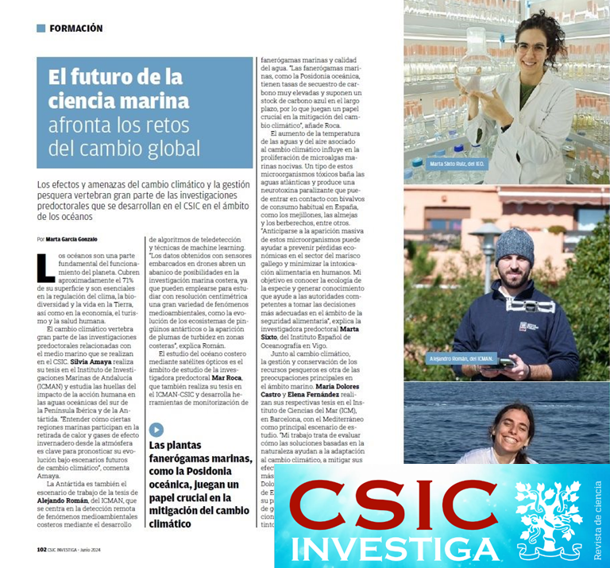
01 June 2024
CSIC Investiga - Oceans: The Future of Marine Science Facing the Challenges of Global Change
Publication in the latest issue of CSIC Investiga ("Oceans"), in which Alejandro Román explains how his PhD research contributes to addressing major global change challenges.
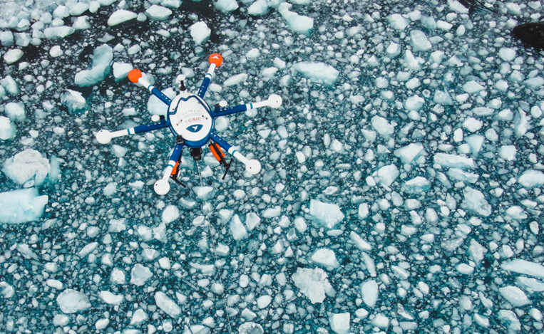
23 April 2024
BBVA OpenMind - Monitoring Antarctica from a Drone's-Eye View
Interview by Elena S. García discussing Antarctic polar research in the context of climate change, the Fulbright experience in the United States, and general reflections on the PhD journey.
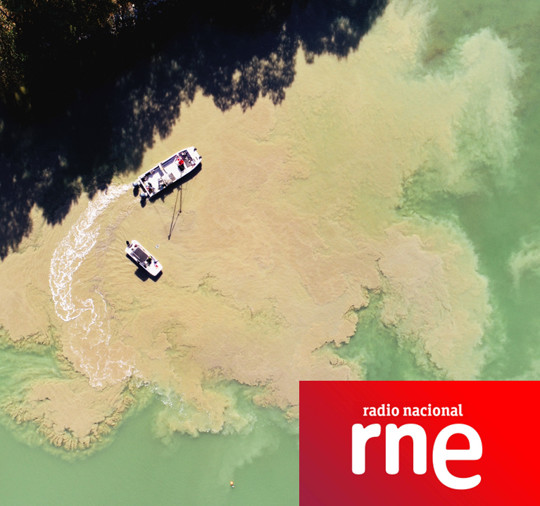
23 February 2024
RNE Program Españoles en la Mar - A New Georeferencing and Mosaicking Algorithm
Interview presenting a new georeferencing and mosaicking algorithm for drone imagery collected over water-covered surfaces. The interview can be heard starting at 18:01 (-17:05).
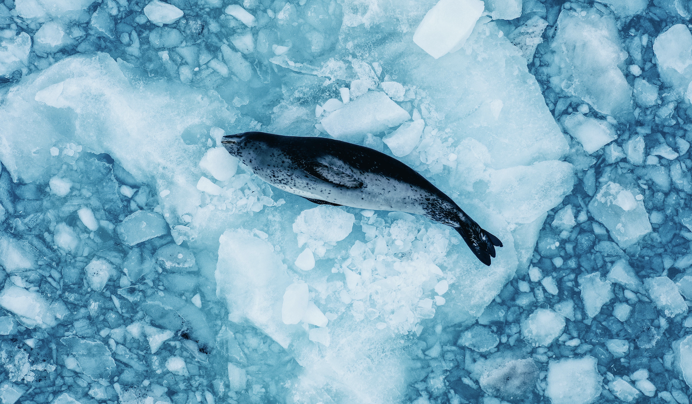
23 February 2024
Press Release - CSIC Publishes the First Open Repository of Photogrammetric Data Captured by Drones in Antarctica
The study provides a highly valuable source of information for both national and international research, given the difficulty of accessing these remote regions.
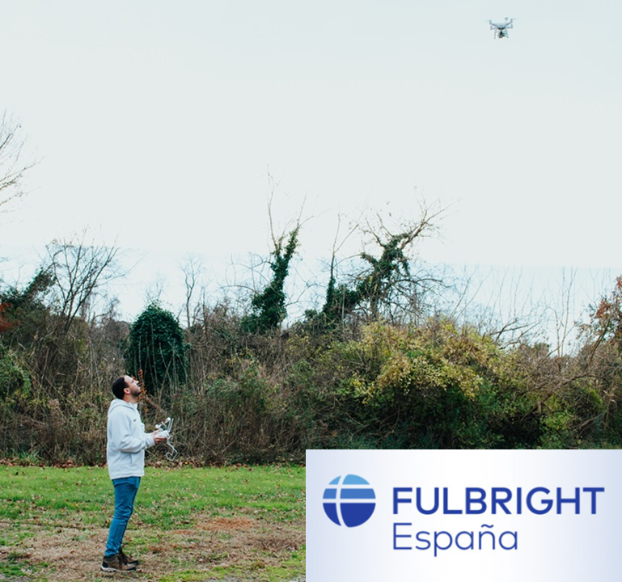
21 February 2024
Fulbright Spain Blog - "Droning" on the Other Side of the Atlantic: A Once-in-a-Lifetime Fulbright Experience
A short piece summarizing the experiences, emotions, and key moments of my Fulbright stay at the University of Maryland Center for Environmental Science (UMCES).
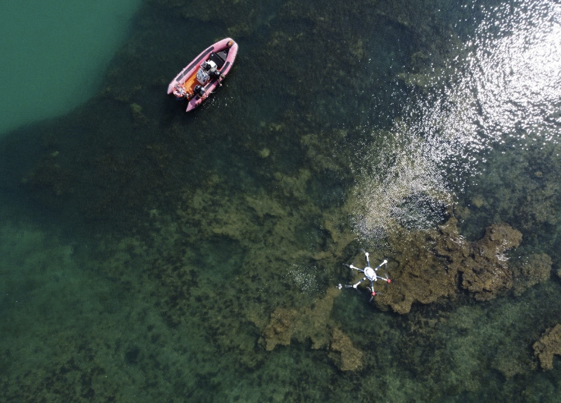
22 January 2024
Press Release - CSIC Develops Software to Study Aquatic Ecosystems
The software enables advanced analysis and monitoring of aquatic environments using innovative technological approaches.
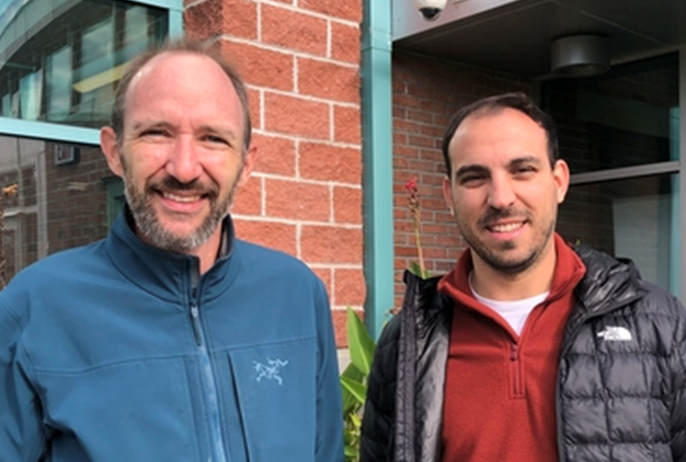
2 November 2023
UMCES Website - Meet Visiting Fulbright Scholar Alejandro Román
Interview about the development of Alejandro Román's Fulbright project at the Horn Point Laboratory (UMCES).
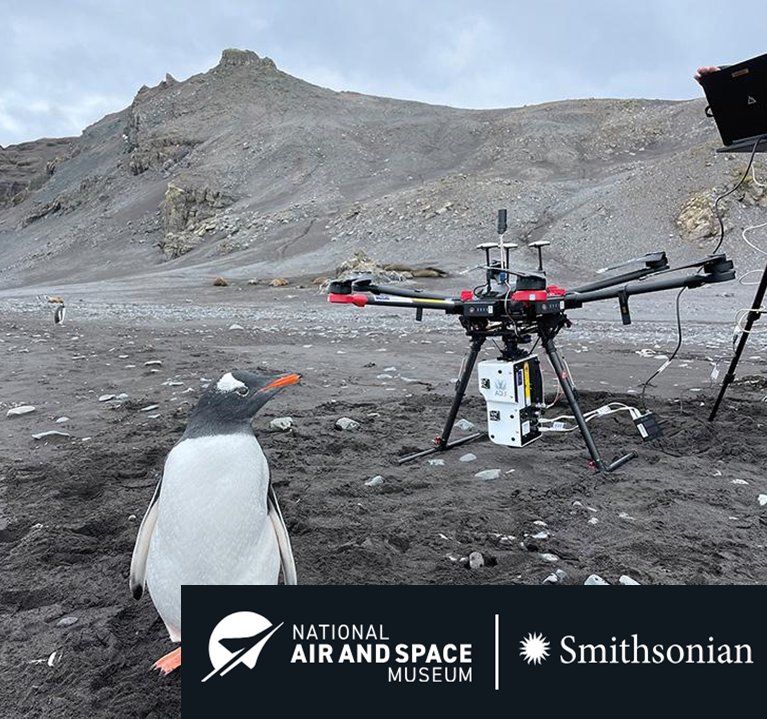
21 September 2022
Smithsonian Website - Remote (Controlled)
An interesting article by Mark Piesing on the use of drones in Antarctic polar research, including the PiMetAn project.
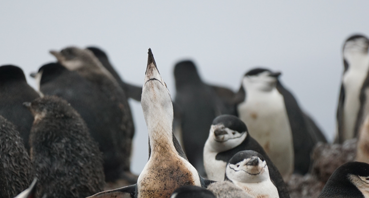
03 June 2021
Canal Sur Radio - Interview on the program Canal Sur Mediodía Cádiz
Interview about the PiMetAn polar project, featuring researchers Erica Sparaventi and Alejandro Román. The interview starts at minute 29:35 of the June 3rd, 2021 broadcast.